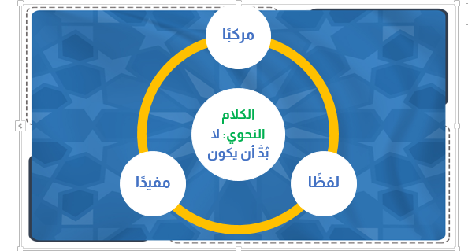
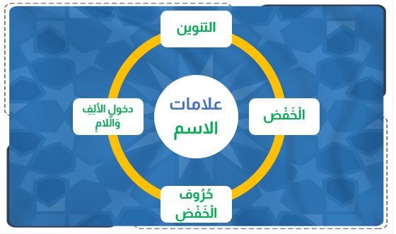
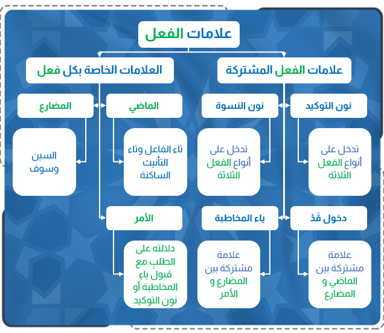

أولا : تعريف الكلمة والكلام

الكلام وما يتأل َّ ف منه
اضغط هنا لمشاهدة الفيديو التوضيحي
بسم الله الرحمن الرحيم ، والصلاة والسلام على أشرف المرسلين ، سيدنا محمد النبي الأمي الكريم ، صلى الله عليه وعلى آلة وصحبه أجمعين ، ثم أما بعد .
فقد درست عزيزي الطالب في الدرس السابق : مقدمة في علم النحو ، وستدرس في هذا الدرس إن شاء الله : الكلام وما يتأل َّ ف منه .
فقد درست عزيزي الطالب في الدرس السابق : مقدمة في علم النحو ، وستدرس في هذا الدرس إن شاء الله : الكلام وما يتأل َّ ف منه .
يرجى لك عزيزي الطالب بعد دراستك لهذا الدرس أن تتعرف على الأمور الآتية : [1] تعريف الكلمة والكلام ، وأقسام الكلمة .
[2] تعريف الاسم والفعل والحرف .
[3] التدر ُّ ب على ضرب أمثلة للاسم والفعل والحرف .
[4] معرفة علامات الاسم .
[5] معرفة أنواع الفعل .
[6] معرفة علامات الفعل .
[7] معرفة علامة الحرف .
[2] تعريف الاسم والفعل والحرف .
[3] التدر ُّ ب على ضرب أمثلة للاسم والفعل والحرف .
[4] معرفة علامات الاسم .
[5] معرفة أنواع الفعل .
[6] معرفة علامات الفعل .
[7] معرفة علامة الحرف .
الكلمة : قول مفرد .
زيد – كتاب – قلم .
الكلام النحوي : فلا ب ُ د َّ من أن يجتمع فيه أمور : أن يكون لفظ ً ا ، وأن يكون مرك َّ ب ً ا ، وأن يكون مفيد ً ا .
شرح التعريف
" أحمد " و " يكتب " و " سعيد " . الإشارة لا تسم َّ ي كلام ً ا عند النحويين ؛ لعدم كونها صوت ً ا مشتمل ً ا على بعض الحروف .
معنى كونه مركب ً ا : أن يكون مؤلف ً ا من كلمتين أو أك ْ ث َ ر َ . ( الع ِ ل ْ م ُ ن َ اف ِ ع ٌ– الد َّ ر ْ س ُ م ُ ف ِ يد ٌ– الأ ُ س ْ ت َ اذ ُ ح َ اض ِ ر ٌ) . فكل ُّ عبارة من هذه العبارات تسم َّ ى كلام ً ا ، وكل عبارة منها مؤلفة ٌ من كلمتين أو أك ْ ث َ ر َ، فالكلمة الواحدة لا تسم َّ ى كلام ً ا عند النحاة إلا إذا ان ْ ض َ م َّ إليها غيرها : سواء ٌ أ َ كان انضمام غيرها إليها حقيقة ً كالأمثلة السابقة ، أم تقدير ً ا ، كما
إذا قال لك قائل : م َ ن ْ أ َ خ ُ وك َ؟ فتقول : م ُ ح َ م َّ د ٌ، فهذه الكلمة ت ُ عت َ ب َ ر ُ كلام ً ا ، لأن الت َّ قد ِ ير : م ُ ح َ م َّ د ٌ أ َ خ ِ ي : فهي في التقدير عبارة مؤل َّ فة من ثلاث كلمات .
ومعنى كونه مفيد ً ا : أن ي َ ح ْ س ُ ن َ سكوت ُ المت َ كلم عليه ، بحيث لا يبقى الس َّ ام ِ ع ُ منتظر ً ا لشيء ٍ آخر ، فلو قلت : " إ ِ ذ َ ا ح َ ض َ ر َ الأ ُ ست َ اذ " لا يسمى ذلك كلام ً ا ، ولو أ َ ن َّ ه لفظ مركب من ثلاث كلمات ؛ لأن المخاطب ينتظر ما تقوله بعد هذا م ِ م َّ ا ي َ ت َ ر َ ت َّ ب ُ على حضور الأستاذ .
فإذا قلت َ: " إذ َ ا ح َ ض َ ر َ الأ ُ س ْ ت َ اذ ُ أ َ ن ْ ص َ ت َ الت َّ لا َ م ِ يذ " صار كلام ً ا لحصول الفائدة .
ال ْ ج َ و ُّ ص َ ح ْ و ٌ - ال ْ ب ُ س ْ ت َ ان ُ م ُ ث ْ م ِ ر ٌ - ال ْ ه ِ لا َ ل ُ س َ اط ِ ع ٌ - الس َّ م َ اء ُ ص َ اف ِ ي َ ة ٌ - ي ُ ض ِ يء ُ ال ْ ق َ م َ ر ُ ل َ ي ْ لا ً - ي َ ن ْ ج َ ح ُ الم ُ ج ْ ت َ ه ِ د ُ - لا َ ي ُ ف ْ ل ِ ح ُ الك َ س ُ ول ُ - لا َ إ ِ له َ إلا َّ الله - م ُ ح َ م َّ د ص َ ف ْ و َ ة ُ ال ْ م ُ ر ْ س َ ل ِ ين َ - الله ر َ ب ُّ ن َ ا - محمد ن َ ب ِ ي ُّ ن َ ا .
ومعنى كونه مفيد ً ا : أن ي َ ح ْ س ُ ن َ سكوت ُ المت َ كلم عليه ، بحيث لا يبقى الس َّ ام ِ ع ُ منتظر ً ا لشيء ٍ آخر ، فلو قلت : " إ ِ ذ َ ا ح َ ض َ ر َ الأ ُ ست َ اذ " لا يسمى ذلك كلام ً ا ، ولو أ َ ن َّ ه لفظ مركب من ثلاث كلمات ؛ لأن المخاطب ينتظر ما تقوله بعد هذا م ِ م َّ ا ي َ ت َ ر َ ت َّ ب ُ على حضور الأستاذ .
فإذا قلت َ: " إذ َ ا ح َ ض َ ر َ الأ ُ س ْ ت َ اذ ُ أ َ ن ْ ص َ ت َ الت َّ لا َ م ِ يذ " صار كلام ً ا لحصول الفائدة .
ال ْ ج َ و ُّ ص َ ح ْ و ٌ - ال ْ ب ُ س ْ ت َ ان ُ م ُ ث ْ م ِ ر ٌ - ال ْ ه ِ لا َ ل ُ س َ اط ِ ع ٌ - الس َّ م َ اء ُ ص َ اف ِ ي َ ة ٌ - ي ُ ض ِ يء ُ ال ْ ق َ م َ ر ُ ل َ ي ْ لا ً - ي َ ن ْ ج َ ح ُ الم ُ ج ْ ت َ ه ِ د ُ - لا َ ي ُ ف ْ ل ِ ح ُ الك َ س ُ ول ُ - لا َ إ ِ له َ إلا َّ الله - م ُ ح َ م َّ د ص َ ف ْ و َ ة ُ ال ْ م ُ ر ْ س َ ل ِ ين َ - الله ر َ ب ُّ ن َ ا - محمد ن َ ب ِ ي ُّ ن َ ا .

ثاني ً ا : أ َ ق ْ س َ ام ُ الكلمة
أول ً ا : الاسم
وفي اصطلاح النحويين : كلمة ٌ د َ ل َّ ت ْ ع َ ل َ ى معن ً ى في نفسها ، ولم تقترن بزمان .
محمد ٍ، علي ّ، ور َ ج ُ ل ، و َ ج َ مل ، ون َ ه ْ ر ، وت ُ ف َّ اح َ ة ، ول َ ي ْ م ُ ون َ ة ٌ، و َ ع َ ص ً ا ، فكل واحد من هذه الألفاظ يدل على معنى ، وليس الزمان داخل ً ا في معناه ، فيكون اسم ً ا .
علامات الاسم

ثاني ً ا : الفعل
الفعل في الاصطلاح : كلمة دل َّ ت ْ على معنى في نفسها ، واقترنت بأحد الأزمنة الثلاثة ـ التي هي الماضي ، والحال ، والمستقبل .
" ك َ ت َ ب َ " فإنه كلمة ٌ دالة ٌ على معنى وهو الكتابة ، وهذا المعنى مقترن بالزمان الماضي ، ونحو " ي َ ك ْ ت ُ ب ُ " فإنه دال على معنى ـ وهو الكتابة أيض ً ا ـ وهذا المعنى مقترن بالزمان الحاضر ، ونحو " اك ْ ت ُ ب ْ" فإنه كلمة دالة على معنى ـ وهو الكتابة أيض ً ا ـ وهذا المعنى مقترن بالزمان المستقبل الذي بعد زمان التكلم .
إضافية : ومثل هذه الألفاظ - السابقة -: ن َ ص َ ر َ ي َ ن ْ ص ُ ر ُ ان ْ ص ُ ر ْ، و َ ف َ ه ِ م َ
" ك َ ت َ ب َ " فإنه كلمة ٌ دالة ٌ على معنى وهو الكتابة ، وهذا المعنى مقترن بالزمان الماضي ، ونحو " ي َ ك ْ ت ُ ب ُ " فإنه دال على معنى ـ وهو الكتابة أيض ً ا ـ وهذا المعنى مقترن بالزمان الحاضر ، ونحو " اك ْ ت ُ ب ْ" فإنه كلمة دالة على معنى ـ وهو الكتابة أيض ً ا ـ وهذا المعنى مقترن بالزمان المستقبل الذي بعد زمان التكلم .
إضافية : ومثل هذه الألفاظ - السابقة -: ن َ ص َ ر َ ي َ ن ْ ص ُ ر ُ ان ْ ص ُ ر ْ، و َ ف َ ه ِ م َ
ي َ ف ْ ه َ م ُ اف ْ ه َ م ْ، و َ ع َ ل ِ م َ ي َ ع ْ ل َ م ُ اع ْ ل َ م ، و َ ج َ ل َ س َ ي َ ج َ ل ِ س ُ اج ْ ل ِ س ْ، و َ ض َ ر َ ب َ ي َ ض ْ ر ِ ب ُ اض ْ ر ِ ب ْ . والفعل على ثلاثة أنواع : ماض ٍ وم ُ ض َ ار ِ ع ٌ وأ َ م ْ ر ٌ: [1] الماضي : ما د َ ل ّ على ح َ د َ ث ٍ و َ ق َ ع َ في الز َّ م َ ان ِ الذي قبل زمان التكل ُّ م .
ك َ ت َ ب َ، و َ ف َ ه ِ م َ، و َ خ َ ر َ ج َ، و َ س َ م ِ ع َ، و َ أ َ ب ْ ص َ ر َ، و َ ت َ ك َ ل َّ م َ، و َ اس ْ ت َ غ ْ ف َ ر َ، و َ اش ْ ت َ ر َ ك َ [2] المضارع : م َ ا د َ ل َّ ع َ ل َ ى حدث ٍ يقع في زمان التكل ُّ م أو بعده .
ي َ ك ْ ت ُ ب ُ، و َ ي َ ف ْ ه َ م ُ، و َ ي َ خ ْ ر ُ ج ُ، و َ ي َ س ْ م َ ع ُ، و َ ي َ ن ْ ص ُ ر ُ، و َ ي َ ت َ كلم ُ، و َ ي َ س ٍ ت َ غ ْ ف ِ ر ُ، و َ ي َ ش ْ ت َ ر ِ ك ُ . [3] الأمر : ما د َ ل َّ على ح َ د َ ث ٍ ي ُ ط ْ ل َ ب ُ ح ُ صوله بعد زمان التكل ُّ م .
اك ْ ت ُ ب ْ، و َ اف ْ ه َ م ْ، واخ ْ ر ُ ج ْ، واس ْ م َ ع ْ، و َ ان ْ ص ُ ر ْ، و َ ت َ ك َ ل َّ م ْ، و َ اس ْ ت َ غ ْ ف ِ ر ْ، و َ اش ْ ت َ ر ِ ك ْ
أنواع الفعل
ك َ ت َ ب َ، و َ ف َ ه ِ م َ، و َ خ َ ر َ ج َ، و َ س َ م ِ ع َ، و َ أ َ ب ْ ص َ ر َ، و َ ت َ ك َ ل َّ م َ، و َ اس ْ ت َ غ ْ ف َ ر َ، و َ اش ْ ت َ ر َ ك َ [2] المضارع : م َ ا د َ ل َّ ع َ ل َ ى حدث ٍ يقع في زمان التكل ُّ م أو بعده .
ي َ ك ْ ت ُ ب ُ، و َ ي َ ف ْ ه َ م ُ، و َ ي َ خ ْ ر ُ ج ُ، و َ ي َ س ْ م َ ع ُ، و َ ي َ ن ْ ص ُ ر ُ، و َ ي َ ت َ كلم ُ، و َ ي َ س ٍ ت َ غ ْ ف ِ ر ُ، و َ ي َ ش ْ ت َ ر ِ ك ُ . [3] الأمر : ما د َ ل َّ على ح َ د َ ث ٍ ي ُ ط ْ ل َ ب ُ ح ُ صوله بعد زمان التكل ُّ م .
اك ْ ت ُ ب ْ، و َ اف ْ ه َ م ْ، واخ ْ ر ُ ج ْ، واس ْ م َ ع ْ، و َ ان ْ ص ُ ر ْ، و َ ت َ ك َ ل َّ م ْ، و َ اس ْ ت َ غ ْ ف ِ ر ْ، و َ اش ْ ت َ ر ِ ك ْ

علامات الفعل
الفعل المضارع : { ل َ ن ُ خ ْ ر ِ ج َ ن َّ ك َ ي َ ا ش ُ ع َ ي ْ ب ُ } { و َ ل َ ا ت َ ح ْ س َ ب َ ن َّ ال َّ ذ ِ ين َ ق ُ ت ِ ل ُ وا ف ِ ي س َ ب ِ يل ِ الل َّ ه ِ أ َ م ْ و َ ات ً ا } الفعل الماضي : " فإما أدر َ ك َ ن َّ واحد ٌ منكم الدج َّ ال َ " . الفعل الأمر : اجتهدن َّ في طلب العلم الشرعي - واحرصن َّ على وقتك .
[2] نون النسوة : تدخل على أنواع الفعل الثلاثة .
الفعل المضارع : { و َ ال ْ م ُ ط َ ل َّ ق َ ات ُ ي َ ت َ ر َ ب َّ ص ْ ن َ ب ِ أ َ ن ْ ف ُ س ِ ه ِ ن َّ ث َ ل َ اث َ ة َ ق ُ ر ُ وء ٍ } الفعل الماضي : { ف َ ل َ م َّ ا ر َ أ َ ي ْ ن َ ه ُ أ َ ك ْ ب َ ر ْ ن َ ه ُ و َ ق َ ط َّ ع ْ ن َ أ َ ي ْ د ِ ي َ ه ُ ن َّ و َ ق ُ ل ْ ن َ ح َ اش َ ل ِ ل َّ ه ِ } الفعل الأمر : { و َ أ َ ق ِ م ْ ن َ الص َّ ل َ اة َ و َ آت ِ ين َ الز َّ ك َ اة َ و َ أ َ ط ِ ع ْ ن َ الل َّ ه َ و َ ر َ س ُ ول َ ه ُ } [3] دخول ق َ د ْ : علامة مشتركة بين الفعل الماضي والفعل المضارع .
الفعل المضارع : قد يفوز المجتهد الفعل الماضي : قد شرب محمد اللبن .
[4] ياء المخاطبة : علامة مشتركة بين الفعل المضارع والفعل الأمر .
الفعل المضارع : { ق َ ال ُ وا أ َ ت َ ع ْ ج َ ب ِ ين َ م ِ ن ْ أ َ م ْ ر ِ الل َّ ه ِ } الفعل الأمر : { ي َ ام َ ر ْ ي َ م ُ اق ْ ن ُ ت ِ ي ل ِ ر َ ب ِّ ك ِ و َ اس ْ ج ُ د ِ ي و َ ار ْ ك َ ع ِ ي م َ ع َ الر َّ اك ِ ع ِ ين َ } [2] العلامات الخاصة بكل فعل : العلامات الخاصة بالفعل الماضي [1] تاء الفاعل : { ق َ ال َ ت ْ ر َ ب ِّ إ ِ ن ِّ ي ظ َ ل َ م ْ ت ُ ن َ ف ْ س ِ ي و َ أ َ س ْ ل َ م ْ ت ُ م َ ع َ س ُ ل َ ي ْ م َ ان َ } [2] وتاء التأنيث الساكنة : { ق َ ال َ ت ْ ن َ م ْ ل َ ة ٌ } العلامات الخاصة بالفعل المضارع : [1] السين : { س َ ي َ ق ُ ول ُ الس ُّ ف َ ه َ اء ُ م ِ ن َ الن َّ اس ِ } - سأزورك غد ً ا .
[2] سوف :
الفعل المضارع : { و َ ال ْ م ُ ط َ ل َّ ق َ ات ُ ي َ ت َ ر َ ب َّ ص ْ ن َ ب ِ أ َ ن ْ ف ُ س ِ ه ِ ن َّ ث َ ل َ اث َ ة َ ق ُ ر ُ وء ٍ } الفعل الماضي : { ف َ ل َ م َّ ا ر َ أ َ ي ْ ن َ ه ُ أ َ ك ْ ب َ ر ْ ن َ ه ُ و َ ق َ ط َّ ع ْ ن َ أ َ ي ْ د ِ ي َ ه ُ ن َّ و َ ق ُ ل ْ ن َ ح َ اش َ ل ِ ل َّ ه ِ } الفعل الأمر : { و َ أ َ ق ِ م ْ ن َ الص َّ ل َ اة َ و َ آت ِ ين َ الز َّ ك َ اة َ و َ أ َ ط ِ ع ْ ن َ الل َّ ه َ و َ ر َ س ُ ول َ ه ُ } [3] دخول ق َ د ْ : علامة مشتركة بين الفعل الماضي والفعل المضارع .
الفعل المضارع : قد يفوز المجتهد الفعل الماضي : قد شرب محمد اللبن .
[4] ياء المخاطبة : علامة مشتركة بين الفعل المضارع والفعل الأمر .
الفعل المضارع : { ق َ ال ُ وا أ َ ت َ ع ْ ج َ ب ِ ين َ م ِ ن ْ أ َ م ْ ر ِ الل َّ ه ِ } الفعل الأمر : { ي َ ام َ ر ْ ي َ م ُ اق ْ ن ُ ت ِ ي ل ِ ر َ ب ِّ ك ِ و َ اس ْ ج ُ د ِ ي و َ ار ْ ك َ ع ِ ي م َ ع َ الر َّ اك ِ ع ِ ين َ } [2] العلامات الخاصة بكل فعل : العلامات الخاصة بالفعل الماضي [1] تاء الفاعل : { ق َ ال َ ت ْ ر َ ب ِّ إ ِ ن ِّ ي ظ َ ل َ م ْ ت ُ ن َ ف ْ س ِ ي و َ أ َ س ْ ل َ م ْ ت ُ م َ ع َ س ُ ل َ ي ْ م َ ان َ } [2] وتاء التأنيث الساكنة : { ق َ ال َ ت ْ ن َ م ْ ل َ ة ٌ } العلامات الخاصة بالفعل المضارع : [1] السين : { س َ ي َ ق ُ ول ُ الس ُّ ف َ ه َ اء ُ م ِ ن َ الن َّ اس ِ } - سأزورك غد ً ا .
[2] سوف :
{ ك َ ل َّ ا س َ و ْ ف َ ت َ ع ْ ل َ م ُ ون َ } - سوف ينجح علي ٌّ . العلامات الخاصة بالفعل الأمر دلالته على الطلب ِ مع قبول ياء ِ المخاطبة أو نون التوكيد .
" ق ُ م ْ " و " اق ْ ع ُ د ْ" و " اك ْ ت ُ ب ْ" و " ان ْ ظ ُ ر ْ"؛ فإن َّ هذه الكلمات الأر ْ ب َ ع َ د َ الة ٌ على طلب حصول القيام والقعود والكتابة والنظر ، مع قبولها ياء المخاطبة في نحو : " ق ُ وم ِ ي ، واق ْ ع ُ د ِ ي " أو مع قبولها نون التوكيد في نحو : " اك ُ ت ُ ب َ ن َّ، وان ْ ظ ُ ر َ ن َّ إلى م َ ا ي َ ن ْ ف َ ع ُ ك َ" .
" ق ُ م ْ " و " اق ْ ع ُ د ْ" و " اك ْ ت ُ ب ْ" و " ان ْ ظ ُ ر ْ"؛ فإن َّ هذه الكلمات الأر ْ ب َ ع َ د َ الة ٌ على طلب حصول القيام والقعود والكتابة والنظر ، مع قبولها ياء المخاطبة في نحو : " ق ُ وم ِ ي ، واق ْ ع ُ د ِ ي " أو مع قبولها نون التوكيد في نحو : " اك ُ ت ُ ب َ ن َّ، وان ْ ظ ُ ر َ ن َّ إلى م َ ا ي َ ن ْ ف َ ع ُ ك َ" .

ثالثا : الحرف
" م ِ ن ْ"، فإن َّ هذا اللفظ كلمة دل َّ ت ْ على معنى ـ وهو الابتداء ُ ـ وهذا المعنى لا يتم ُّ حت َّ ى ت َ ضم َّ إلى هذه الكلمة غير َ ه َ ا ، فتقول : " ذ َ ه َ ب ْ ت ُ م ِ ن َ ال ْ ب َ ي ْ ت " مثل ً ا .
ونحو : إلى ، ع َ ن ْ، ع َ ل َ ى ، إلا ، لك ِ ن ْ، إن َّ، أ َ ن ْ، ب َ لى ، ب َ ل ْ، ق َ د ْ، س َ و ْ ف َ، ح َ ت َّ ى ، ل َ م ْ، لا ، ل َ ن ْ، ل َ و ْ، ل َ م َّ ا ، لع َ ل َّ، م َ ا ، لا َ ت َ، ل َ ي ْ ت ، إن ْ، ث ُ م َّ، أ َ و ْ .
علامة الحرف
قال العلامة الحريري في م ُ لحة الإعراب :
والح َ ر ْ ف ُ م َ ا ل َ ي ْ س َ ت ْ ل َ ه ُ ع َ ل َ ام َ ه ْ *** ف َ ق ِ س ْ ع َ ل َ ى ق َ و ْ ل ِ ي ت َ ك ُ ن ْ ع َ ل َّ ام َ ه ْ
[1] الكلمة : قول مفرد نحو : زيد – قلم .
[2] الكلام النحوي : لا بد أن يكون لفظ ً ا وأن يكون مركب ً ا وأن يكون مفيد ً ا - نحو : أقبل علي .
[3] علامات الاسم : ال ْ خ َ ف ْ ض ، و َ الت َّ ن ْ و ِ ين ِ، و َ دخول ِ الأل ِ ف ِ و َ ال َّ لام ِ، و َ ح ُ ر ُ وف ال ْ خ َ ف ْ ض ِ . [4] الفعل : كلمة دل َّ ت ْ على معنى في نفسها ، واقترنت بأحد الأزمنة الثلاثة ـ التي هي الماضي ، والحال ، والمستقبل .
[5] أنواع الفعل : ماضي – مضارع – أمر .
[6] علامة الفعل الماضي : قبوله تاء التأنيث الساكنة مثل قرأت فاطمة الدرس .
[7] علامة الفعل المضارع : أن يكون أول حرف فيه من حروف “ أنيت ” مع دلالة الكلمة على الحال أو الاستقبال .
ويصلح أن تسبقه ” لم ، لن ، س ، سوف ” مثل لم نلعب ، لن نلعب ، سنلعب ، سوف نلعب .
[8] علامة الفعل الأمر : دلالته على الطلب ِ مع قبول ياء ِ المخاطبة أو نون التوكيد [9] الحرف : ما يظهر معناه في غيره ، نحو : من - إلى ، وليست له علامة يعرف بها .
[2] الكلام النحوي : لا بد أن يكون لفظ ً ا وأن يكون مركب ً ا وأن يكون مفيد ً ا - نحو : أقبل علي .
[3] علامات الاسم : ال ْ خ َ ف ْ ض ، و َ الت َّ ن ْ و ِ ين ِ، و َ دخول ِ الأل ِ ف ِ و َ ال َّ لام ِ، و َ ح ُ ر ُ وف ال ْ خ َ ف ْ ض ِ . [4] الفعل : كلمة دل َّ ت ْ على معنى في نفسها ، واقترنت بأحد الأزمنة الثلاثة ـ التي هي الماضي ، والحال ، والمستقبل .
[5] أنواع الفعل : ماضي – مضارع – أمر .
[6] علامة الفعل الماضي : قبوله تاء التأنيث الساكنة مثل قرأت فاطمة الدرس .
[7] علامة الفعل المضارع : أن يكون أول حرف فيه من حروف “ أنيت ” مع دلالة الكلمة على الحال أو الاستقبال .
ويصلح أن تسبقه ” لم ، لن ، س ، سوف ” مثل لم نلعب ، لن نلعب ، سنلعب ، سوف نلعب .
[8] علامة الفعل الأمر : دلالته على الطلب ِ مع قبول ياء ِ المخاطبة أو نون التوكيد [9] الحرف : ما يظهر معناه في غيره ، نحو : من - إلى ، وليست له علامة يعرف بها .